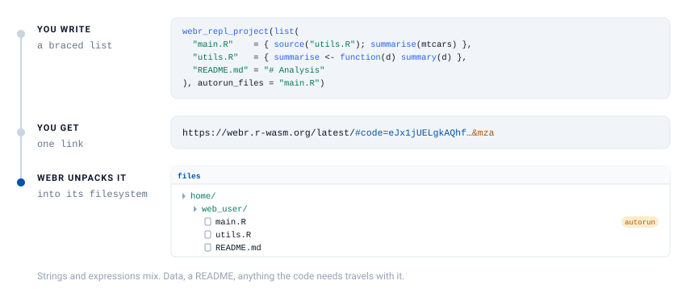
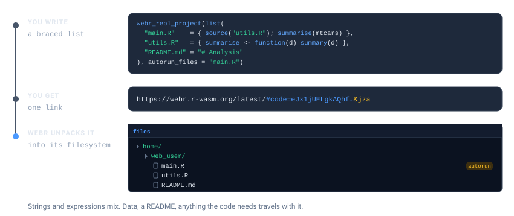
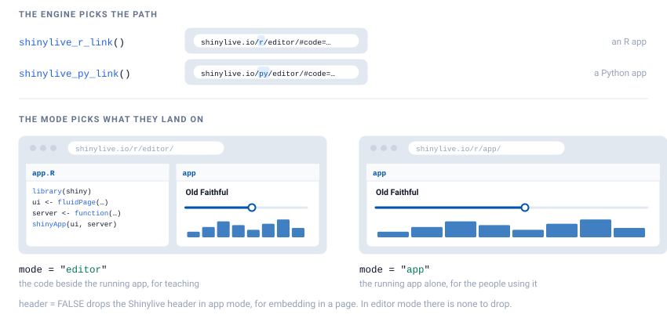
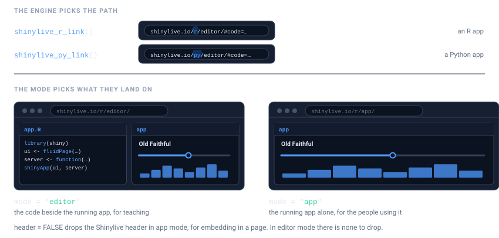

webr_repl_project(list(
"main.R" = { source("utils.R"); summarise(mtcars) },
"utils.R" = { summarise <- function(d) summary(d) },
"README.md" = "# Analysis\n\nRun main.R to start."
))Real work is rarely one file. A script sources a helper, an app is split across ui.R and server.R, an analysis needs its data. All of it fits in one link.
This article covers webR projects, Shiny apps in R and Python, and turning a whole directory into links.
webR projects
webr_repl_project() packs several files into a single link. webR unpacks them into its filesystem, so source("utils.R") finds utils.R exactly where it expects it.


Describing the files
Two input shapes, and you can use whichever is closer to hand.
A named list, where the names become the filenames. Write each file as R, in braces. No escaped newlines, no fighting with quotes, and your editor keeps highlighting it:
Non-R files stay strings, and the two forms mix freely, since a project is usually code and something else.
Write the list inside the call
The braces only work when the list is written in the call.
list()is an ordinary function, so if you assign it to a variable first, R evaluates its arguments. The block runs, right there, and livelink never sees the source:# WRONG: the block runs now, and actually tries to source("utils.R") project <- list("main.R" = { source("utils.R"); summarise(mtcars) }) webr_repl_project(project) # RIGHT: written in the call, the block is captured and never run webr_repl_project(list("main.R" = { source("utils.R"); summarise(mtcars) }))livelink notices the first case and stops with an error rather than encoding whatever the block happened to return. A list of strings in a variable is fine, of course. That is the older form, and it still works.
Because the blocks are captured rather than evaluated, an assignment inside one leaves nothing behind in your session. { summarise <- function(d) summary(d) } defines nothing here. It is source to ship, not code to run.
Two caveats carry over from single-file expressions. Comments inside { } survive interactively but not in a knitted document, and a library() call inside a block is visible to R CMD check, which will report that package as an undeclared dependency of yours. Use a string for code that loads packages.
When a project has to be reused across several calls, as it is through the rest of this section, keep it as a list of strings in a variable. A list of strings is a plain value, so it assigns without surprises:
project <- list(
"main.R" = "source('utils.R')\nsummarise(mtcars)",
"utils.R" = "summarise <- function(d) summary(d)",
"README.md" = "# Analysis\n\nRun main.R to start."
)
webr_repl_project(project)A vector of file paths, when the code is already on disk:
dir <- file.path(tempdir(), "project")
dir.create(dir, showWarnings = FALSE)
writeLines("source('utils.R')", file.path(dir, "main.R"))
writeLines("f <- function() 42", file.path(dir, "utils.R"))
webr_repl_project(c(file.path(dir, "main.R"), file.path(dir, "utils.R")))Files are read and named by their basename, so the paths on your machine never leave it.
Running something on arrival
autorun_files names the files to execute when the link opens. The link then carries webR’s a flag, which is what actually triggers the run:
link <- webr_repl_project(project, autorun_files = "main.R")
preview_webr_link(as.character(link))$autorun_files
#> [1] "main.R"Pass "all" to run every R file in the project:
webr_repl_project(project, autorun_files = "all")Naming a file that is not in the project is an error, rather than a link that quietly does nothing:
webr_repl_project(project, autorun_files = "nonexistent.R")
#> Error in `ensure_files_in_list()`:
#> ! Files specified in `autorun_files` not found in `input`
#> ✖ Missing files: 'nonexistent.R'
#> ℹ Available files: 'main.R', 'utils.R', and 'README.md'Only .R files can autorun. Listing a .csv is harmless, and simply is not run.
Where the files land
By default everything is placed in /home/web_user/, which is webR’s working directory, so relative paths in your code just work. base_path moves them:
webr_repl_project(project, base_path = "/home/web_user/analysis/")Move them and relative source() calls have to move with them, so leave this alone unless you have a reason.
Shiny apps


Write the app as a braced expression, exactly as you would write it anywhere. No quotes around the whole thing, no escaped newlines, and your editor keeps highlighting the code:
shinylive_r_link({
library(shiny)
ui <- fluidPage(
titlePanel("Old Faithful"),
sliderInput("bins", "Bins:", 1, 50, 30),
plotOutput("hist")
)
server <- function(input, output) {
output$hist <- renderPlot({
hist(faithful$waiting, breaks = input$bins, col = "steelblue")
})
}
shinyApp(ui, server)
})That is real, working code. It is marked eval: false here for one narrow reason, which does not apply to your own documents.
Why that chunk is not run
Only to keep this package’s vignette honest about its dependencies.
R CMD checkreads the live code in a vignette and, findinglibrary(shiny)in a braced expression, would decide livelink depends on shiny. It does not. Marking the chunkeval: falsekeeps that call out of the scanned code.Your own course notes are not a package under check, so there is no such constraint. Write the app as an expression and let it run.
When you want the link built and inspected here, a string sidesteps the scan, so this vignette can execute it. A bare string becomes app.R:
app <- "library(shiny)\nshinyApp(fluidPage(), function(input, output) {})"
shinylive_r_link(app)For an app split across files, the same choice applies. Write each file in braces:
Editor or app?
mode decides what a visitor lands on.
# code and app side by side -- for teaching and review
shinylive_r_link(app, mode = "editor")
# the running application only -- for the people who just want to use it
shinylive_r_link(app, mode = "app")In app mode you can also drop the Shinylive header, which is what you want when the app is going into an <iframe> on someone else’s page:
shinylive_r_link(app, mode = "app", header = FALSE)header does nothing in editor mode, where there is no header to hide.
modeis notpanelsShinylive has two display modes,
"editor"and"app". webR has four panels you can show or hide. They are different arguments because they are different ideas: one picks a layout, the other picks which parts of a layout appear.
Python
Python apps work the same way, and a bare string becomes app.py:
py_app <- "
from shiny import App, render, ui
app_ui = ui.page_fluid(
ui.h2('Hello from Python'),
ui.output_text('greeting'),
)
def server(input, output, session):
@render.text
def greeting():
return 'Running in the browser, no server required.'
app = App(app_ui, server)
"
shinylive_py_link(py_app, mode = "app")The engine is in the URL, shinylive.io/r/ versus shinylive.io/py/, so a link carries its own language with it.
shinylive_project() is the same thing with the engine named explicitly, which is useful when the engine is a variable rather than a decision you already made:
shinylive_project(
list("app.py" = py_app, "utils.py" = "def helper():\n return 42"),
engine = "python"
)A directory at a time
Each Shiny app in its own folder is the usual layout, and shinylive_directory() turns the lot into links in one pass:
apps <- file.path(tempdir(), "apps")
dir.create(file.path(apps, "histogram"), recursive = TRUE, showWarnings = FALSE)
dir.create(file.path(apps, "scatter"), recursive = TRUE, showWarnings = FALSE)
writeLines(app, file.path(apps, "histogram", "app.R"))
writeLines(app, file.path(apps, "scatter", "app.R"))
links <- shinylive_directory(apps, engine = "r", mode = "app")
#> ✔ Found 2 Shiny apps in '/tmp/RtmpoO7B5d/apps'
#> ℹ Processing r Shiny apps...
#> ✔ Successfully created 2 Shinylive links
repl_urls(links)
#> histogram
#> "https://shinylive.io/r/app/#code=NobwRAdghgtgpmAXGKAHVA6ASmANGAYwHsIAXOMpMAGwEsAjAJykYE8AKAZwAtaJWAlAB0IPPqwCC6dgDNqAV1oATAApQA5nHYDcAAhnyIBUrRLs+qeaT1Erl0gN0gAvgLxhSrVAmTkAHqRgzgC6QA"
#> scatter
#> "https://shinylive.io/r/app/#code=NobwRAdghgtgpmAXGKAHVA6ASmANGAYwHsIAXOMpMAGwEsAjAJykYE8AKAZwAtaJWAlAB0IPPqwCC6dgDNqAV1oATAApQA5nHYDcAAhnyIBUrRLs+qeaT1Erl0gN0gAvgLxhSrVAmTkAHqRgzgC6QA"Every subdirectory holding an app.R (or app.py, for Python) becomes one link, named after the folder. Helpers, data and CSS in that folder are bundled in with it. Binary files are skipped with a warning, because a link is the wrong place for them.
A directory with no apps in it warns and hands back an empty result, rather than failing:
empty <- file.path(tempdir(), "no-apps")
dir.create(empty, showWarnings = FALSE)
shinylive_directory(empty, engine = "r")
#> Warning: No Shiny apps found
#> ! No directories containing 'app.R' found in '/tmp/RtmpoO7B5d/no-apps'
#> ℹ Each app should be in its own subdirectory with 'app.R' as the main file(no links)
webr_repl_directory() is the webR counterpart, and by default it works the other way round: it gives each R script in a directory its own link, rather than bundling a folder into one. That suits a folder of course scripts, and Teaching with livelink puts it to work.
When you do want the whole directory in a single link, pass single_link = TRUE. The files are bundled exactly as webr_repl_project() would bundle them, and you get one webr_project back instead of a directory of links:
scripts <- file.path(tempdir(), "scripts")
dir.create(scripts, showWarnings = FALSE)
writeLines("source('utils.R')", file.path(scripts, "main.R"))
writeLines("f <- function() 42", file.path(scripts, "utils.R"))
webr_repl_directory(scripts, single_link = TRUE, panels = c("editor", "plot"))
#> ✔ Bundling 2 files into one linkWith autorun = TRUE alongside it, every R file in the bundle runs on arrival.
How big can a link get?
The files travel inside the URL, so the ceiling is whatever a browser accepts in a URL. Current browsers handle tens of thousands of characters, which is a lot of R.
The payload is gzipped before it is encoded, and source code compresses well. Real R source, rather than a toy example:
src <- paste(
unlist(lapply(c("lm", "glm", "aov"), function(f) {
paste(deparse(get(f, envir = asNamespace("stats"))), collapse = "\n")
})),
collapse = "\n\n"
)
url <- as.character(webr_repl_link(src, filename = "stats.R"))
c(source_chars = nchar(src), url_chars = nchar(url))
#> source_chars url_chars
#> 10193 4358The link comes out smaller than the code it carries, because gzip more than pays for what base64 costs.
Binary data is the case that does not work: it does not compress, and base64 inflates it by a third. Do not put a PNG in a link. Have the code fetch it, or point at it.